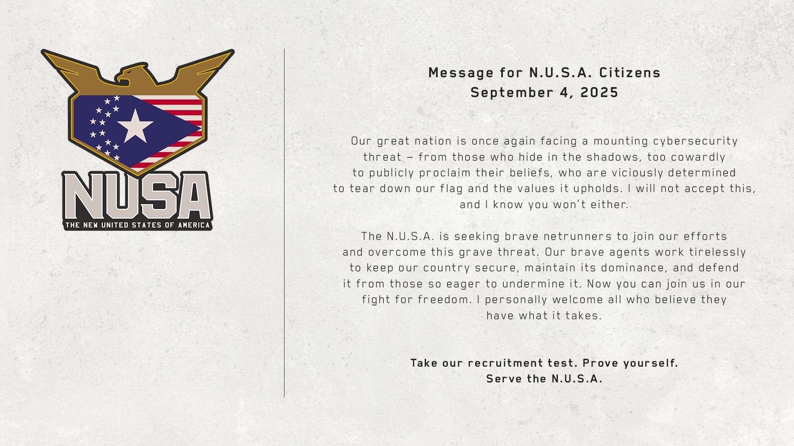

NUSA BROADCAST
SRC: MYERS-BC-01

Presidential Address to N.U.S.A. Citizens
Encrypted message from President Rosalind Myers regarding Dogtown operations and high-risk assets in Night City. Full transcript remains ██████████.